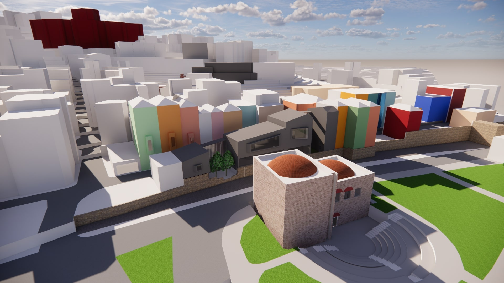
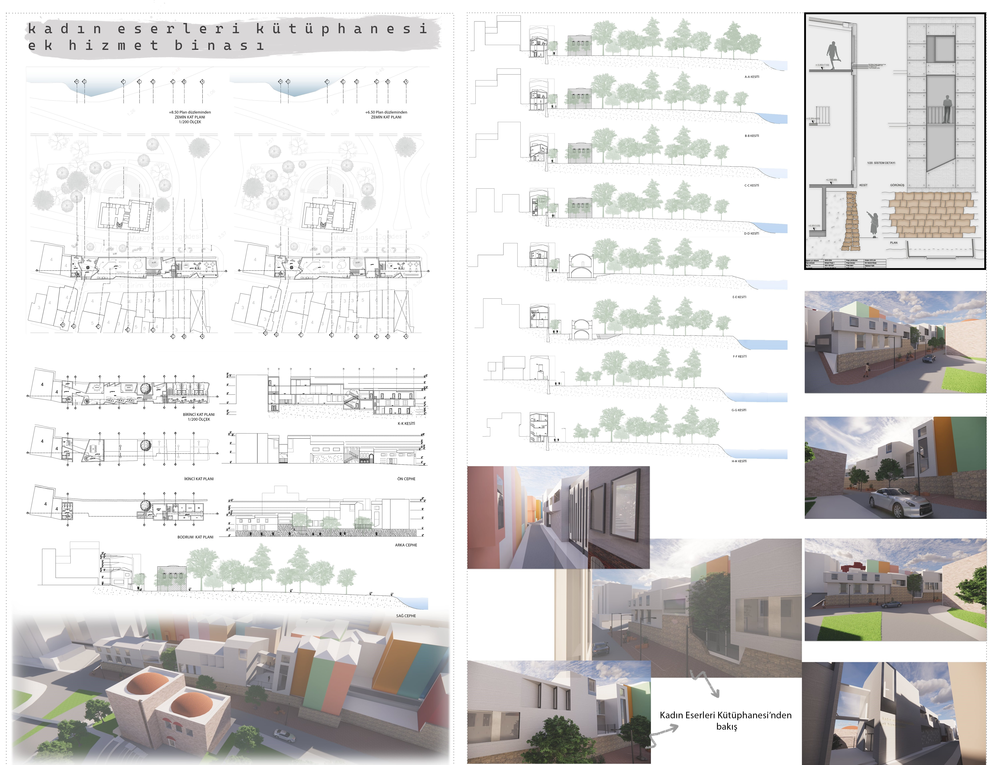
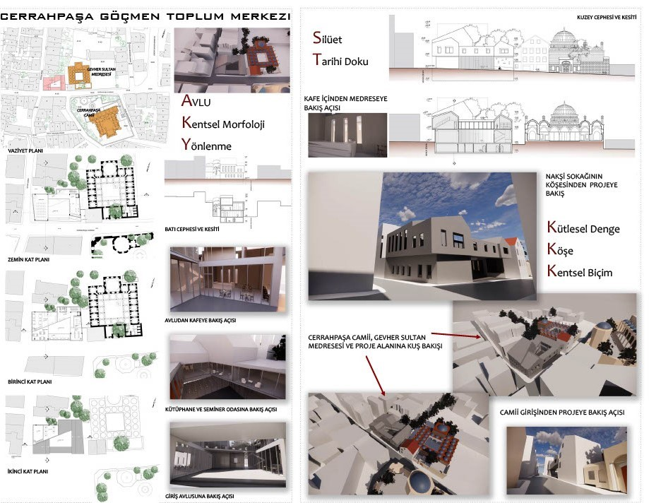

ARCHİTECTURAL PROJECT-I
WOMEN'S WORK LİBRARY ADDİTİONAL BUİLDİNG
The project site is located in Istanbul's Fatih district, in the Fener neighbourhood. It is situated on the block across from the Women’s Works Library, on Halil Street.The project began with an analysis of the library.
Due to the library's increasing collection over time, it has experienced spatial limitations.As a natural consequence, the project's primary focus was to provide an exhibition space, which formed the basis for the remaining design areas.The project's relationship with the city walls involved integrating the walls into the ground level and ensuring that, from a distance, the new structure would not disrupt the existing context. The solution ensures a harmonious visual balance.
The project’s second basement integrates a podium, designed to blend with the natural topography of the area, preserving the existing environment. This podium features an open seating area.
The ground floor connects with the surrounding streetscape, emphasizing integration into the urban context. Within the library, vertical arrangements reduce visual impact. The project minimizes height differences at street level, creating a smoother transition between the library and its surroundings.


ARCHİTECTURAL PROJECT-II
CERRAHPAŞA İMMİGRANT COMMUNİTY CENTER
The project area is located in the Cerrahpaşa district of Fatih district, which is famous for its historical texture in Istanbul. This area is located diagonally across from Cerrahpaşa Mosque and right next to Gevher Sultan Madrasah. At the beginning of the project, the historical and cultural texture of Cerrahpaşa was examined in detail and these analyses formed the basis of the project design. The primary goal of the project is to protect the historical silhouette by adapting to the urban morphology and
to create a mass that is compatible with the scale of the surrounding buildings. In this context, a spatial and visual relationship was tried to be established with Cerrahpaşa Mosque and Gevher Sultan Madrasah during the design process. These two are; orientation of the mass towards the mosque and providing a contemporary interpretation of the traditional courtyard layout of the madrasah.
The designed courtyard was inspired by the courtyard layout of traditional Ottoman madrasahs and was designed as an area where students can spend time together and engage in social activities.
In this way, a structure that respects the historical texture of Cerrahpaşa, but at the same time responds to modern needs, has been created. The project is not only a physical structure, but also carries the badge of being a social center.
d.
The general design approach of the project was based on presenting modern architectural solutions while preserving the historical and cultural context. In this way, a sustainable structure integrated with the existing urban fabric of Cerrahpaşa was achieved for the future.
